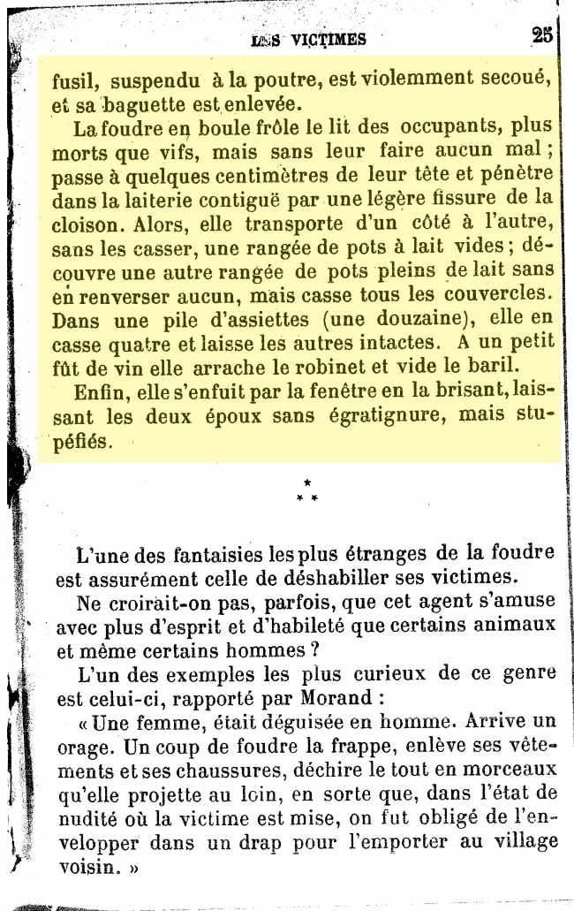
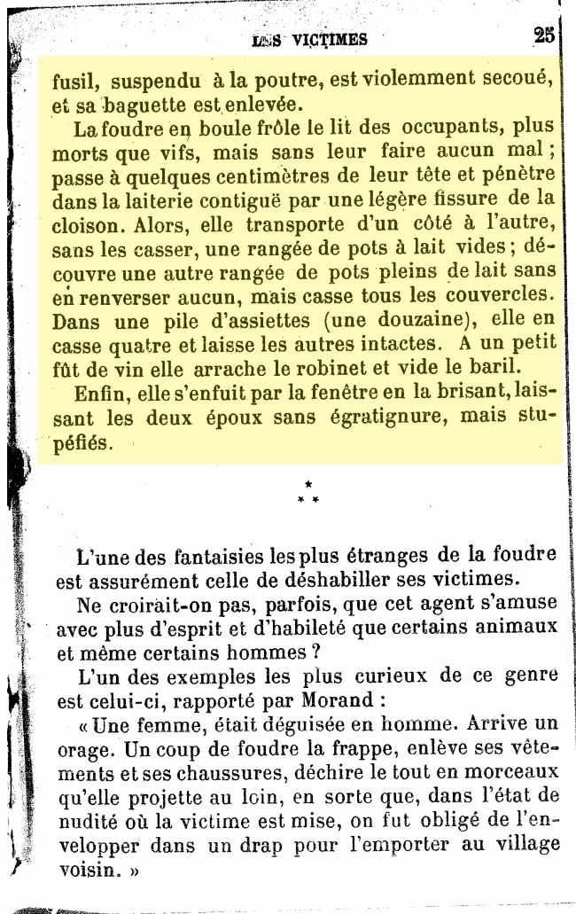
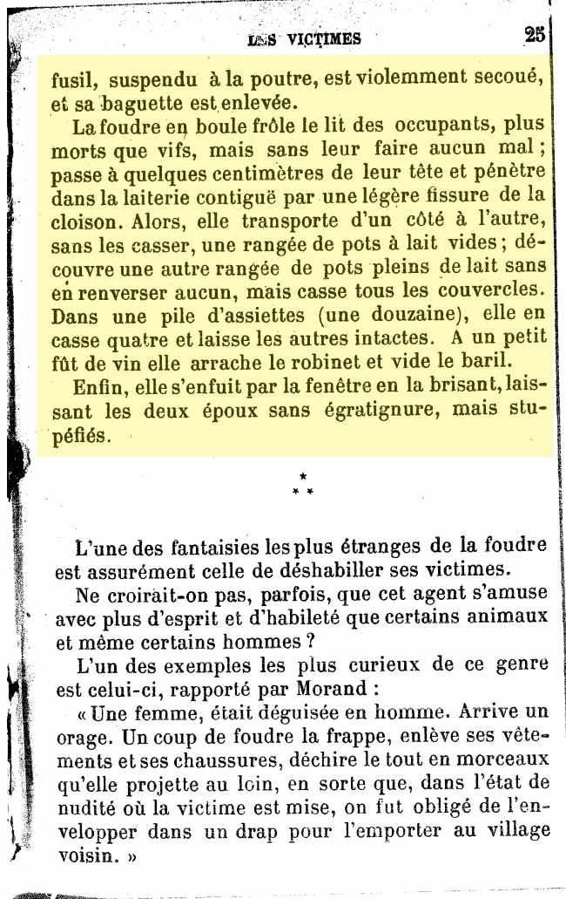
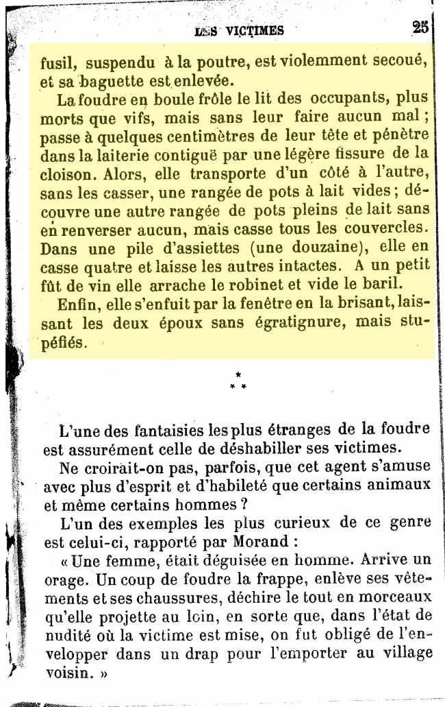

, à Linguy (Eure-et-Loir), deux époux dormaient profondément quand, soudain, un bruit épouvantabler les éveille en sursaut. Ils se croient à leur dernière heure. La cheminée désagrégée, émiettée de la base au sommet, s'est écroulée, remplissant l'appartement de ses débris, le pignon est disloqué, le toit tombe. À l'intérieur, les effets de la foudre ne sont pas moins terrifiants, mais revêtent un caractère de bizarrerie peu ordinaire. Ainsi, presque à la hauteur du plafond, au-dessus d'une herse où sont accrochés divers ustensiles de cuisine, tels que casseroles, entonnoirs, gaufriers, etc, les pierres de la muraille sont lancées horizontalement avec une telle force qu'elles s'incrustent dans le mur opposé.
Pendant que les vitres de l'appartement volent en éclats, une glace est descellée de la muraille et posée délicatement à terre, absolument intacte !
Une chaise garnie d'effets d'habillement, placée auprès du lit, est enlevée et transportée à l'entrée de la pièce. Une petite lampe, une boîte d'allumettes, sont retrouvées à terre sans dommage. Un vieux fusil, suspendu à la poutre, est violemment secoué, et sa baguette est enlevée.
La foudre en boule frôle le lit des occupants, plus morts que vifs, mais sans leur faire aucun mal ; passe à quelques centimètres de leur tête et pénètre dans la laiterie contiguë par une légère fissure de la cloison. Alors, elle transporte d'un côté à l'autre, sans les casser, une rangée de pots à lait vides ; découvre une autre rangée de pots pleins de lait sans en renverser aucun, mais casse tous les couvercles. Dans une pile d'assiettes (une douzaine), elle en casse quatre et laisse les autres intactes. À un petit fût de fin, elle arrache le robinet et vide le baril.
Enfin, elle s'enfuit par la fenêtre en la brisant, laissant les deux époux sans égratinure, mais stupéfiés.